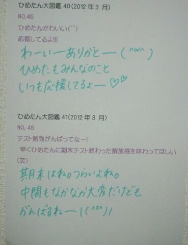
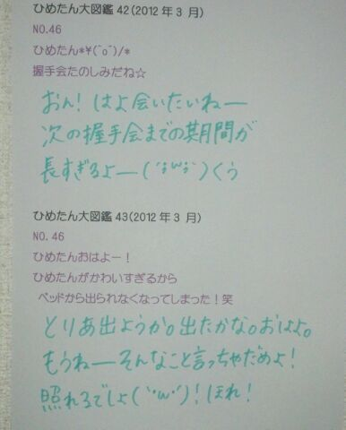

| 2013/05 29 Wed | ひめたん大図鑑49(2012年4 月) |
ひめたん大図鑑とは何か。それは、いわゆる
「過去の質問返しをまとめたもの」って
感じかな。
過去なので時制とかおかしなことになる質問も
中にはあるかもだけど、
ま、そゆことなんでね(*^^*)
「過去の質問返しをまとめたもの」って
感じかな。
過去なので時制とかおかしなことになる質問も
中にはあるかもだけど、
ま、そゆことなんでね(*^^*)

1008
 誰になら推し変してもいいですか?
誰になら推し変してもいいですか?
えーそんなこと聞くの...?
1009
ひめたんのニックネームって誰が考えたん?
初めてひめたんって呼んだのは妹(*^^*)
1010
ひめたんは、ツンデレじゃないのかな?(笑)
でーれでれです。照。
つんつん要素は存在しないんだこれが。
1011
特に思わず広島弁全開の時ってどんなシチュエーション?
今日の入学式のあとのHRで早速広島弁全開だったみたい。
もう方言を封印するのは無理だとわかりました(\'・ω・`)にゃ
1012
ひめきゅんより上の位とかあるの?
今は存在しないけど...
作りましょうか(∀)☆
1013
ヒールかぁ〜疲れない?
男だからまったくわからんけど、ヒールってどんな感じ??
ヒール疲れますよ(\'・ω・`)
でもヒールを履いてこそ素敵なあいどる的なポリシーね。それだけで頑張れますお。
試しにお店で履いてみてはどうかしら☆?
無理かぁわら
1014
遠征大変じゃない?
荷物の準備と朝早い集合が辛いけど
出発してしまったらもう幸せ(*\'∀`*)♪
修学旅行みたいな楽しさです//
1015
うぇっさい(\'▽`)ノこれから広めようと思ってんだけどどうかな?w
うぇっさい(\'▽`)ノひめたんもご協力しますよ♪
うぇっさい、うぇっさーい(\'▽`)ノ
1016
電車とかで寝ちゃって乗り過ごしたりすることってある?
ありますよ(\'・ω・`)
寝過ごすのも大変だけど、寝ぼけて2っくらい早い駅で降りたことも違う路線の電車に乗ったこともありますよ。
事故事故っ♪♪
1017
どこに買い物に行くことが多いですか?
渋谷・原宿、
あとアメ横も好きですっ(^ω^)
アメ横の楽しさねーもうびっくりする☆!
1018
アンダーメンバーと選抜メンバーが遊ぶことってあんまりないんですか?
そんなことないよ＼(^O^)／みんな仲良しだよ♪
ちなみにひめたんが初めて一緒に遊んだのはかずみさん(高山一実chan)!
1019
お小遣いっていくらぐらいなの?使い道は?
不定期ってか必要な時に必要な分だけもらってる(∀)☆
1020
豆柴犬は好き?
可愛いよねー豆柴ちゃんね∪・ω・∪
1021
乃木坂の紫色の垂れ幕、気付いてもらえましたか?
垂れ幕作成に至る秘話、じっくり読ませていただきました。
私たちもサッカーのサポーターのみなさんの前で歌うにあたってもちろん楽しみがおおかったけど、不安もありました。
でも乃木坂の垂れ幕見て(あっ私たち乃木坂のために来てくれたんだ。)ってなんだかホッとしました♪運動会でぱぱままの顔見つけたような気分(*^^*)
1022
"ちゅーしちゃうぞ"ってPV撮影の時にひめたんが考えたのカナ?
台本の台詞をひめたん流にアレンジしてひめたん流のニュアンスで提案したフレーズであります
(//ω//)
1023
中学校で、何かの部活がなくなったとかありますか?
ひめたんが入学式した時はすでに存在してなかったけど昔は演劇部があったらしいです(\'`)
1024
もし自分の部活がなくなるとしたら、どうしますか?
放送部は大好きだったから、どうにかして残してもらうと思う。
だって今まで頑張ってきたなら最後まで続けたいじゃん!
交渉してみてはどうでしょう(\'・ω・`)?ひめたん悲しいよ?
1025
握手に向かって全力でネタを仕込むファンをどう思う?
熱いですねーそゆの好きよ//
みなさんが熱いとひめたんもテンション上がります
∩^ω^∩
これからも全力で握手しましょーう!
1026
これからはコメントするときタメでもいいですか?
どうぞどうぞ(w)☆
1027
太鼓合宿でキツイ俺にエールして下さいww
頑張れー!
辛くなったらひめたんを思いだすんだよ(`・ω・\')
ひめたんもみなさんに負けんようにいろいろ頑張るー!!!
そうそう。テストはじまたよー
今日はねーそうだよねー
いやー世界史なんて困ったよね( ^ω^ )うん
でもいいんです！
明日からの教科は真面目に頑張るって決めて
ちゃーんとお勉強しだしたんで問題なーい
テスト終わったままのノリで
大阪公演初日迎えるので待っててね♪
 ほれ。
ほれ。
いつもはエフェクトかけてみたり
ちょっと写めです遊ぶんだけど
そんな時間はないのだ。
レアだぞー♪


(＊´・ω・＊)
コメント(134)
2013/05/29 00:00